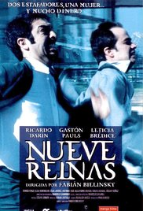
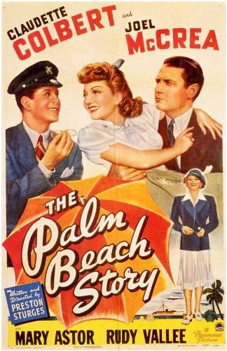

Enjoy Sunday nightat the movies!
Raleigh's oldest and finest nonprofit film society offers classic feature presentations monthly at the Rialto Theatre in Raleigh, NC.
Welcome to The Cinema, Inc.
The Cinema, Inc. is currently in its 52nd season. The season runs from September to August. Movies are screened the second Sunday of the month at the Rialto Theatre on Glenwood Avenue, in Raleigh's Five Points neighborhood. Admittance is restricted to only members. Membership cost is $20 for the season.
Doneccursus et amet a mattitor condisse laoreet accum wisis sapibulum orci. Cursuscondimentum dolorem pulvinare lacus amet commod tincidunt tellus quisque donec natibus.
Announcing Our 53rd Season
Download the PDF brochure listing the twelve movies scheduled for our 2018-19 season, and send in your form with payment. Tickets are still $20 for twelve films - what a bargain! Please do not wait to join. We have to cap membership based on seating capacity of the theater, and the last few seasons have sold out. You will receive notification of membership, and passes will be mailed to members in August.
Screening NEXT
- 
March 11, 2018
Nine Queens
Argentina, 2000, 114 min, R
Directed by Fabián Bielinsky; Starring Ricardo Darín, Gastón Pauls, Leticia Brédice.
Nine Queens is a first-class heist movie. Juan is a struggling swindler, stuck cheating convenience stores out of unimpressive amounts of cash. He catches the eye of Marcos, a professional con artist, who coincidentally is in need of a new partner. The two spend a day getting acquainted, demonstrating various small-time cons for each other. They come across a potentially lucrative deal involving a set of forged stamps known as the Nine Queens. It is quite entertaining to watch these guys as they set up an extremely elaborate heist regarding the forged stamps. If you are a viewer who is hard to trick, you’ll enjoy trying to figure out the con. It’s fun to be fooled.
-
April 8, 2018
Losing Ground
USA, 1982, 86 min, Not rated
Directed by Kathleen Collins; Starring Billie Allen, Gary Bolling, Clarence Branch Jr., Joe Garcia.
Sara Rogers has reached a crossroads in her life. She’s a professional African-American woman, but the film isn’t defined by race or sex. Sara is a professor at CCNY. She teaches a course on existentialism, but also pursues a project on “ecstasy,” even though confessing that she doesn’t know what it means to be transported outside herself. Sara’s husband, Victor, is her temperamental opposite: ebullient, effusive, outgoing. New horizons appear for Sara when she is asked to star in a student film. Cast in the role of a deceived lover who shoots her partner in a jealous rage, she finds her own emotions transformed. - 
May 13, 2018
The Palm Beach Story
USA, 1942, 88 min, Not rated
Directed by Preston Sturges; Starring Claudette Colbert, Joel McCrea, Mary Astor, Rudy Vallee.
Gerry (Claudette Colbert) and Tom (Joel McCrea) have been married for years and are very much in love, but their marriage is falling apart because of financial problems. Gerry finally decides that it’s best to get a divorce in Palm Beach and start fresh. The film is full of witty dialogue, outstanding one-liners, razor-sharp satire, fantastic characterizations and a great sense of humor. The magic that makes Sturges’ films so entertaining is that they transport the audience to a different place where good things happen to good people and at the end true love always wins.